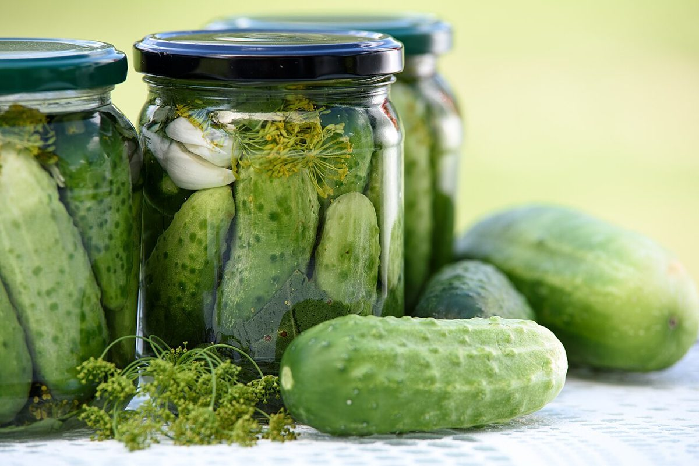
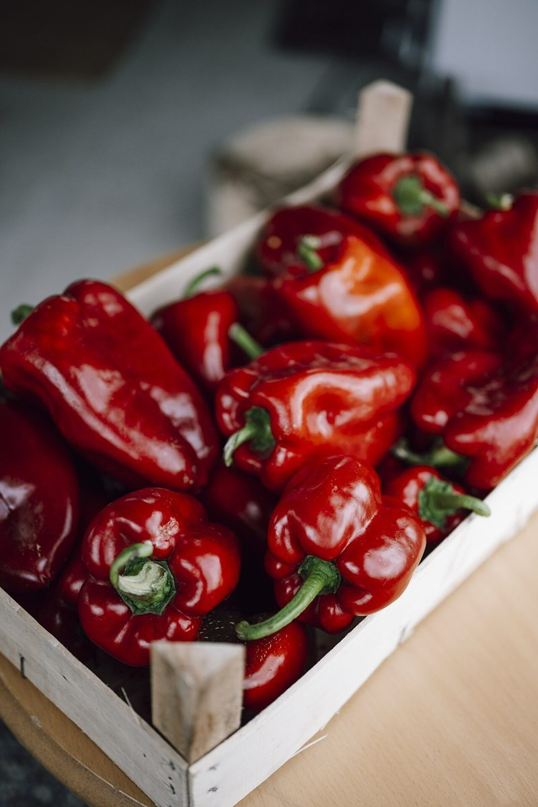

ベーカリーセイボリーデイ

制作側の連想
三面の回転看板のように
店名の由来は分かりません。制作側は「セイボリー(savory)」という言葉から、塩気のある味わいを連想しました。「デイ」は一日。そこから、街角で三つの面がゆっくり切り替わる回転看板を思い浮かべ、このサイトを「三面看板のひと回し」というテーマで組み立てています。これは制作側の連想で、お店の理念・由来とは無関係です。面の色は黄・緑・赤の3色で、ページをめくるたびに色が回ります。
イメージ写真
塩気のある一皿を思い浮かべて。
写真はお店や商品ではありません。「セイボリー」から連想した、国外・撮影地不明のフリー素材です。



ご案内
お店のこと(確認できたものだけ)
| 所在地 | 〒326-0802 栃木県足利市旭町847-46 |
|---|---|
| 電話 | なし |
| 営業時間 | 準備中 |
| 定休日 | 準備中 |
| ご予約 | 準備中 |
| 駐車場 | 準備中 |
| SNS | Instagram @bakerysavoryday2017 |